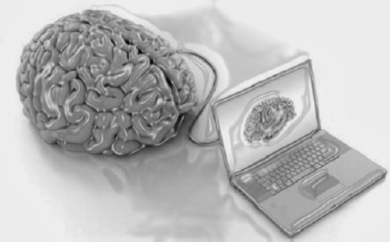
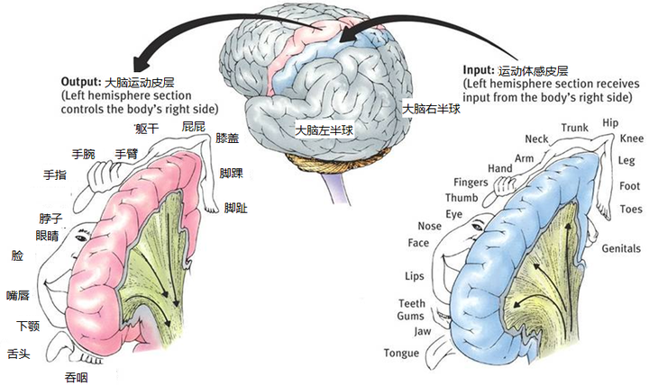
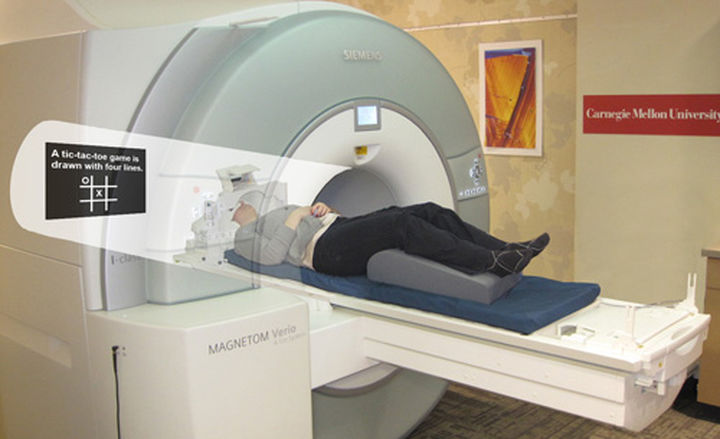
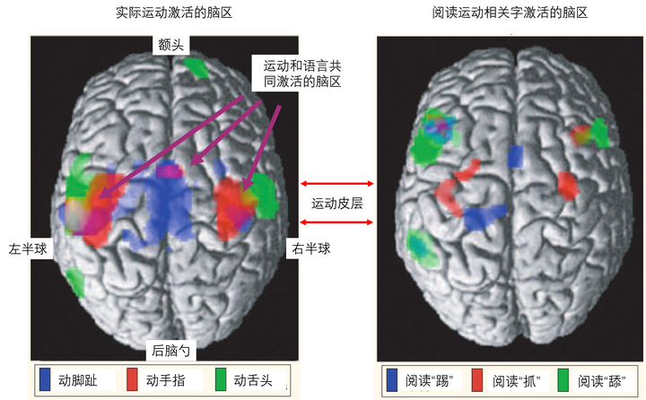

为什么没有双腿的残疾人难以理解罗纳尔多盘球过人的快感？ 因为没有双腿，没有使用腿的经历，对于没有双腿的残疾人来说“盘球过人”就跟“跳踢踏舞”一样没有意义。
上一篇文章我介绍了传统的认知主义（cognitivism）在理论上的两个缺陷：一是认知是基于抽象符号（abstract symbols）的运算，不能够产生意义。二是认知主义对感知（perception）和运动（action）分开的独立的考虑，不能够很好的解释他们间互动的现象。
为了解决这两个缺陷，近20年来学者们开始把大脑和身体以及环境联合起来考虑，开始推广具身认知（embodied cognition）的新思路。Larry Barsalou在08年的综述有兴趣的同学可以阅读了解一下：Barsalou, L. W. (2008). Grounded cognition. Annual Review of Psychology, 59, 617–645.
具身认知是怎么回事呢？具身认知认为认知是离不开身体，离不开具体的感知和运动经历的。
再举个残疾人的例子，如果你问一个先天失明的人：
你觉得红色好看还是黄色好看呢？
你这不是逗人玩吗？盲人生来就没有视觉上的经历，颜色对TA来说不过是抽象的符号罢了。缺乏具体的经历，“红色”和“黄色”的概念就没有实际意义。即使盲人能通过语言和社会学习表达出对颜色的偏好（比如蓝色和男性关联，粉色和女性关联），这种偏好也不是基于视觉的经历（即好不好看），因此无法做出有效的判断和回答。
具身认知都有什么实验证据呢？
下面我先介绍一个经典的，具有里程碑意义的实验。参考：Hauk, O., Johnsrude, I., & Pulvermüller, F. (2004). Somatotopic representation of action words in human motor and premotor cortex. Neuron, 41(2), 301–307.
这个实验是比较运动和语言认知的。具身认知的理论和实验并不局限于语言方面。我在这里用语言认知做例子是因为语言有很强的符号性，咋一看跟身体和运动毫不相干。
谈起身体和运动，我们得先知道人身体的各部位在大脑皮层中是倒置分布的。见下图：

在上图中大脑是直立的摆放的，是从左后脑的方向来展示的。在大脑中部的这么一条带状的区域（图中粉色区域）就是大脑的运动皮层。这样一个带状的区域靠下的部分控制着上半身的肢体运动，比如面部表情啊，眨眼睛啊，手指和手臂的运动等等。运动区越靠上的部位呢控制着下半身的运动，比如躯干，臀部的运动，以及腿和脚的运动。至于为什么运动区是倒置分布的在这里并不重要。重要的是要明白各个运动脑区是有明确分工的，这为使用脑成像研究大脑的功能提供了基础。
脑成像常用的一个技术叫做功能性核磁共振（functional magnetic resonance imaging; fMRI）。见下图：

这个机器能够监测大脑血液中氧气的含量。大脑就跟我们的肌肉一样，是需要养分和氧气来提供能量的。我们掰手腕的时候肱二头肌发力，就需要消耗大量的能量。同理，大脑某个区域工作量提高的话，对能量的需求也增大。需求增大了，大脑就会向这个脑区输入大量的血液，增加葡萄糖和氧气的含量。氧气的含量上升就会被功能核磁共振的扫描仪检测到，在扫描出来的脑图中以亮度增强的形式表现出来。计算机通过数学建模和统计，可以最终把靠谱的有意义的亮度变化翻译成漂亮的大脑活跃度图。
如果我们要证明人各肢体的运动是由运动皮层不同的区域来控制的，我们可以请一组被试者在扫描仪里面做各种肢体运动。比如说动动脚指头，动动手指头，或者吐吐舌头。然后看大脑的那些部位变得更加活跃。不出意外的话，我们会看到不同肢体的运动激活运动皮层的不同脑区（下图左）。下面的3D大脑是以从上而下鸟瞰的这么一个角度看的。运动皮层的顶部（即图的中心）在脚部运动的时候活跃（蓝色）。从顶部往地处走，这些脑区在做手部运动的时候活跃（红色）。再往下走呢，这些区域在做面部运动的时候活跃（绿色）。这样一个神经活动的分布是和我们之前说的倒置分布相吻合的。

现在关键的来了。如果我们让同样的被试阅读运动相关的文字，比如“踢”，“抓” 或者 “舔”，什么样的脑区会被激活呢？
按照认知主义的理论，这些概念都是由抽象的符号来代表的。抽象符号具有任意性，并没有本质上的区别（比如 “踢” 可以任意的用抽象符号 001001 编码，也可以用 100110 来编码，没有特别的局限性）。既然如此，所有抽象符号的计算应该可以由一个脑区来负责（相当于电脑的CPU）。在脑成像中，我们就应该会看到一个 “抽象符号” 区被激活。然而，按照具身认知的理论，运动相关的概念是由运动的经历来代表的。一个人要真正理解“踢”的意义，必须有一条腿，有过踢的经验。在阅读理解“踢”这个字的时候，运动皮层相关腿部运动的区域就必须激活有关踢的运动经历，来赋予“踢”运动上的意义。在脑成像中，不同意义的字就应该会激活跟其意义有关的不同的感知运动系统，而不是同一个“抽象符号”区。
实验结果支持了具身认知的观点（请看上图右）。阅读不同的运动相关的文字如“踢”，“抓”，和“舔”各自激活了独立的脑区。这说明了一个单一的“抽象符号”区并不存在。更重要的是，当实验人把实际运动激活的脑区（图左）和阅读文字激活的脑区（图右）相比较之后发现他们激活的脑区有很大部分是重叠的（见图左紫色色块，具体的统计和ROI分析我在此略过了）。这样的结果有力的说明了运动语言的认知是和运动系统紧密的联系起来的。
具身认知对我们的日常生活有什么启发呢？
好了，如果大脑的认知确实和感知和运动的经历有很紧密的联系，那这说明了我们看待理解外界事物的能力是受自身经历所限制的。缺少双腿，残疾人是无法理解踢足球的乐趣。没有子宫，男人是很难体会大姨妈的山崩地裂。没有失败，我们就感受不到成功后的欣喜若狂。如果我们想要有广阔的眼界，能辨证的思考，就必须要主动的做出尝试，付出行动。只有通过与世界的互动来不断的积累经验，我们才能给大脑源源不断的养分来支持和更新它对世界的认知。
最后祝大家新春快乐！下次再见。